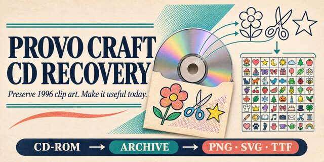

Provo Craft CD Recovery
Classic CD-ROM preservation

A macOS recovery workflow for six 1996 Provo Craft clip-art CD-ROMs that current macOS cannot read, preserving the original media while keeping recovered content local.
Executive summary
Why it exists
Six 1996 Provo Craft electronic clip-art CD-ROMs use classic Macintosh HFS layouts that current macOS reports as unreadable. I wanted to preserve the original discs, make the artwork usable on current tools, and avoid publishing material that remains subject to the original package license.
Outcome
Recovered six discs with their raw archives, modern local derivatives, and generated font files. The public repository contains only scripts and documentation, including a reading of the unusually restrictive 1996 license terms; recovered media stays in a Git-ignored local directory.
My role
Preservation tooling and documentation.
Technical overview
How it works
A Python workflow for raw 2352-byte-sector CD capture, SHA-256 validation, derived ISO creation, read-only HFS extraction, TIFF-to-PNG conversion, EPS-to-SVG conversion, suitcase-font conversion, and labeled contact sheets. It detects the optical drive, preserves a complete archive before extraction, and handles the different folder layouts found across the discs.
Hard parts
The discs vary in their Macintosh folder layouts, and modern macOS cannot directly mount the classic HFS volume. The workflow had to preserve raw images without altering them, support multiple artwork and font paths, avoid treating an interrupted capture as resumable, and eject the physical disc even when later extraction fails.